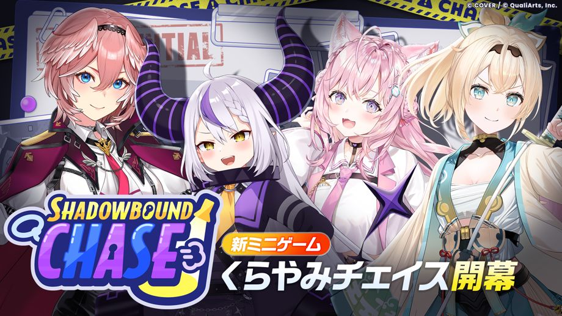
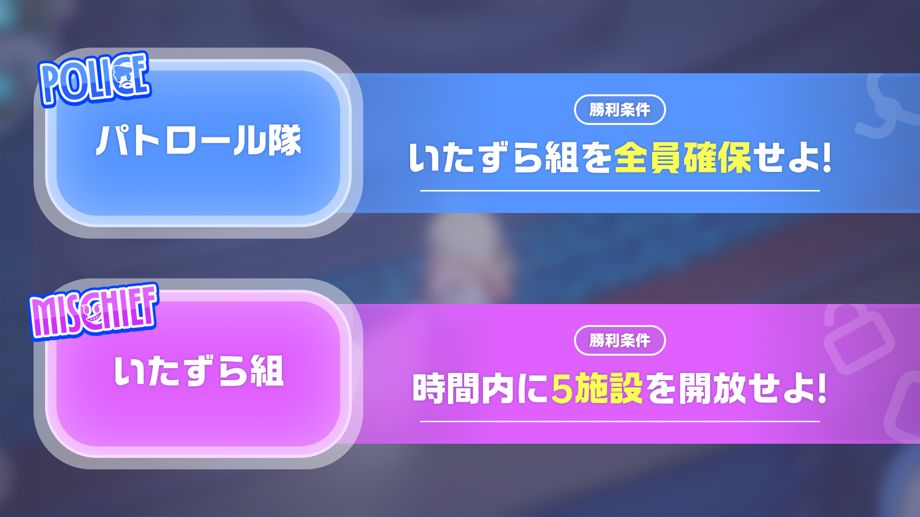
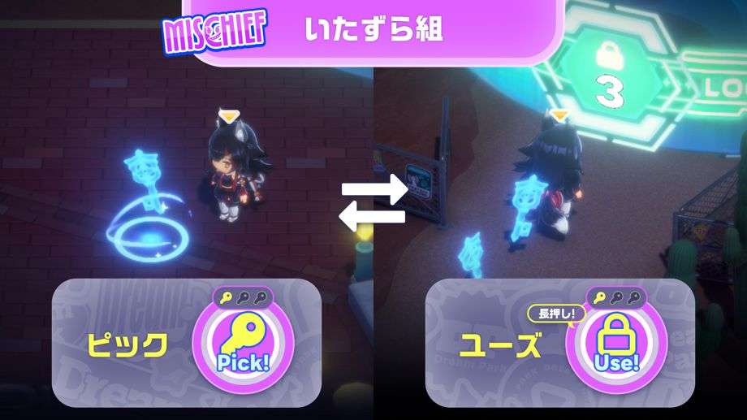
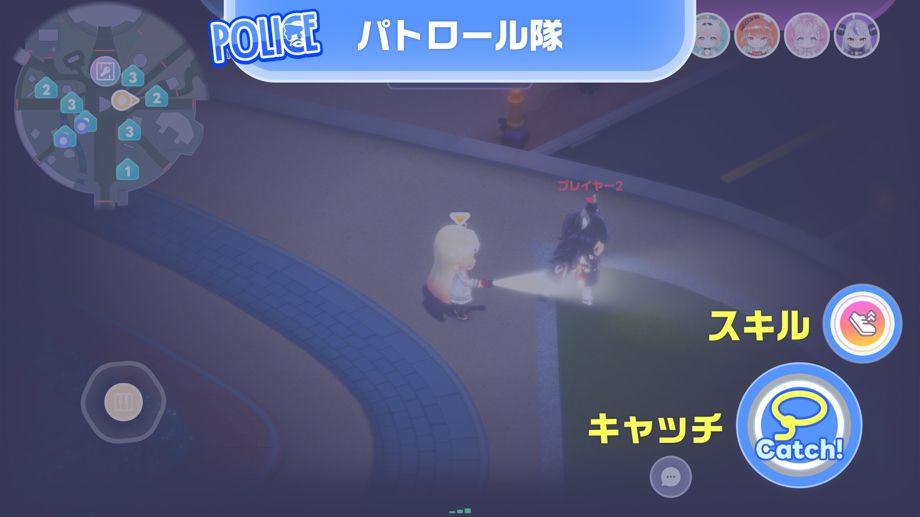
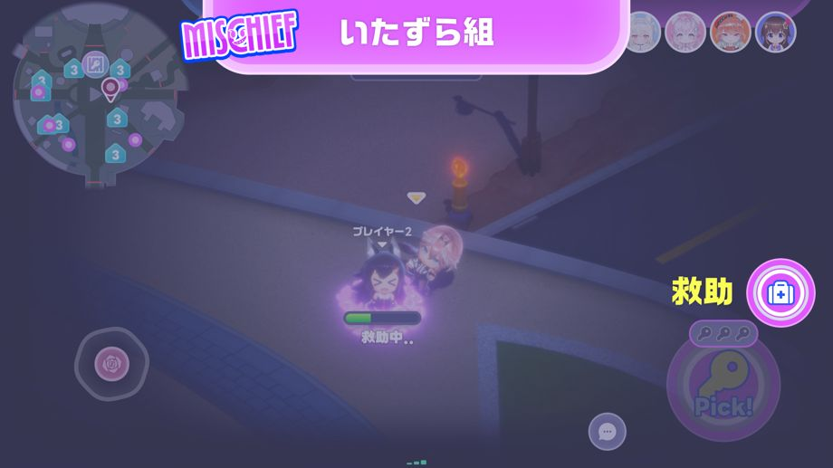
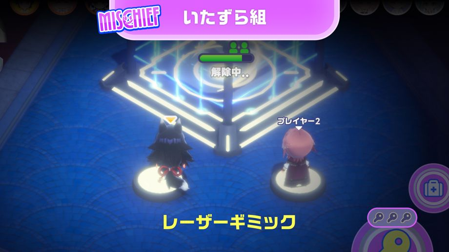
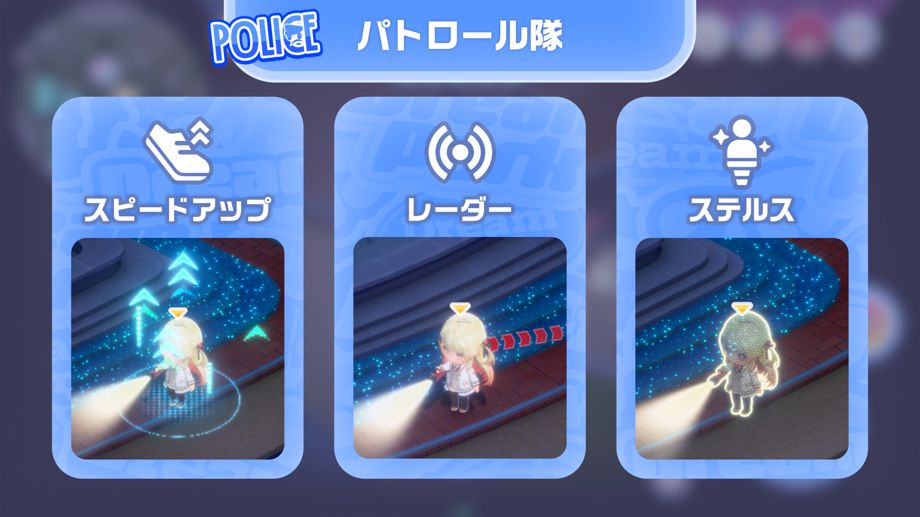
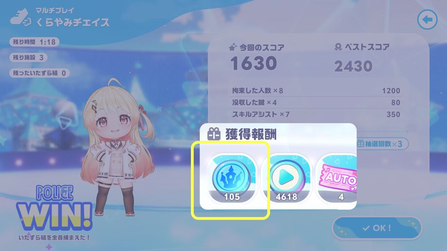

2026-08-28 11:00:00より、新ミニゲーム「くらやみチェイス」が開幕！
◆ミニゲーム追加日
2026-08-28 11:00:00〜
◆参加条件
エリアクエスト「暗闇の宴、火花散らすチェイス」をクリア
※エリアクエスト「暗闇の宴、火花散らすチェイス」は、メインクエスト1章「ハーモニーガーデン」をクリアすることで解放されます。
※マルチプレイのプライベートルームでは、メインクエスト1章4話「Mythical Connection」をクリアすることで遊ぶことができます。
新ミニゲーム「くらやみチェイス」概要

くらやみチェイスは、逃げるいたずら組と捕まえるパトロール隊の2チームに分かれて対戦するミニゲームです。
いたずら組の概要

いたずら組は、パトロール隊から逃げながら、施設を5つ開放することで勝利となります。
施設を開放するには、パーク内に落ちている鍵を使用する必要があります。
◆操作方法
・ピック：鍵の近くでタップすると、鍵を拾うことができます。
・ユーズ：鍵を持った状態で施設に近づいて長押しすると、鍵を使うことができます。
※鍵を持って施設に近づくと、ボタンが切り替わります。
パトロール隊の概要

パトロール隊は、いたずら組を全員捕まえることで勝利となります。
いたずら組に近づいて「キャッチ」を押すことで、捕まえることができます。
また、制限時間内にいたずら組が施設を5つ開放できなかった場合でも、パトロール隊の勝利となります。
いたずら組の救助について

いたずら組は、捕まった味方を救助することができます。
捕まった味方の近くで「救助」を長押しすることで、助けることができます。
いたずら組のレーザーギミックについて

いたずら組は、レーザーギミックを活用することで、試合を有利に進めることができます。
レーザーギミックを解除することで、各施設の開放に必要な鍵の数を1つ減らすことができます。
レーザーギミックは、手前のスイッチに乗ることで解除することができます。
スイッチは2つあり、2人で乗るとより早く解除できます。
パトロール隊のスキルについて

パトロール隊は、スキルを使うことができます。
使えるスキルは3種類で、パトロール隊のプレイヤーごとにランダムで割り当てられます。
◆スキル説明
・スピードアップ：移動速度がアップする
・レーダー：近くにいるいたずら組の位置がわかる
・ステルス：半透明になり、いたずら組から見えにくくなる
※スキルは一定時間だけ有効です。
※スキルを使うと、ゲージが溜まるまで使えなくなります。
報酬について

報酬は勝敗に関わらず、スコアに応じて獲得することができます。
報酬ではハーモニーガーデンコインを獲得することができます。
ハーモニーガーデンコインは、ねぽらぼマートでさまざまなアイテムと交換できます。
注意事項
・開催期間および内容は予告なく変更する場合があります。